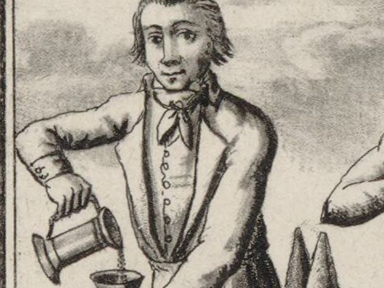
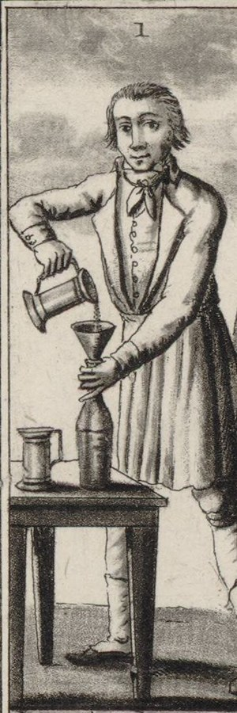
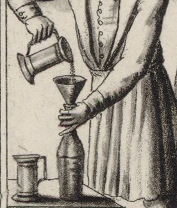

Liters and Milliliters
Today: read beakers in milliliters by finding what each mark is worth, see 1,000 milliliters fill 1 liter, write amounts in liters and milliliters, and read a thermometer in degrees Fahrenheit and Celsius. Dimensions Math 3B, Chapter 11, Lesson 5 · Liters and Milliliters

Paris, France · about 230 years ago

How many milliliters fill a liter?
Read the marks on a beaker. When the water reaches 1,000 milliliters, it fills a 1 liter bottle.
You will…
- Read a beaker: find what each mark is worth, then count.
- Change liters and milliliters: 1 L = 1,000 mL.
- Read a thermometer in degrees.
Why the liter measure?
This real print was made in Paris in 1800 to show people how to use the new measures. It has six small pictures. This is picture 1. Its label says "le Litre (pour la Pinte)": the liter, in place of the old pint.


Before the 1790s, a pint of milk in one French town was not the same size as a pint in the next town. In 1795, France made new measures that would be the same everywhere. The new unit for liquids was the liter. A liter is the space inside a box 10 centimeters long, 10 centimeters wide and 10 centimeters tall. It is a little more than the old Paris pint, so sellers had to get used to new measures.
Today's math: a liter is made of 1,000 milliliters. A beaker has marks so you can read how many milliliters are in it.
Today you'll count by thousands and by fifties a lot. Type each answer, then check. You can fix any answer and check again.
Kilometers into meters
Think: The Milk Seller's Jug
🔨 Do · ✏️ WriteA milk seller in Paris pours her jug of milk into a big beaker. How much milk is there? Then she pours it into a 1 liter bottle.
A beaker that holds 2,000 milliliters, with milk in it. The numbers on the side go up by 100. The gold pointer helps you count the small marks. Next to it is an empty bottle that holds 1 liter.
Count the marks
Drag the gold pointer up the marks to the top of the milk.
Read the beaker
Pour into the bottle
Press ⤵ Pour beaker into the bottle.
Liters and milliliters
Tell how
1 L 850 mL of milk. 1,000 mL filled the 1 liter bottle, and 850 mL stayed in the beaker.
1,000 milliliters fill 1 liter
- Find what each mark is worth. Look at two numbers next to each other, like 100 and 200. Count the small marks between them. If 2 marks make 100, each mark is 50 mL.
- Read the top of the water. Start at the last number below the water and count on by the marks.
- Fill a liter. 1,000 mL fill a 1 liter bottle. 1 L = 1,000 mL.
- Liters and milliliters. 1,350 mL: 1,000 mL fill a bottle, and 350 mL are left. 1,350 mL = 1 L 350 mL.
- Back to milliliters. 1 L 350 mL = 1,000 mL + 350 mL = 1,350 mL.
- Watch the zeros. 6 L 40 mL = 6,000 mL + 40 mL = 6,040 mL. Not 640, and not 6,400.
Key idea: liters and milliliters work just like kilometers and meters. 1,000 small units make 1 big unit. The top number on a beaker tells its capacity, how much it can hold. The top of the water tells how much is in it now.
Four ways to read and change liquid amounts
Your Turn: A Liter and Then Some
🔨 DoFill a 1 liter bottle. Then fill the beaker to 900 mL. How many milliliters is that in all?
An empty beaker that holds 1,000 mL, and an empty bottle that holds 1 liter. Tap the bottle to fill it. Drag the top of the water to fill the beaker.
Fill the bottle
Tap the 1 L bottle to fill it.
Fill the beaker to 900 mL
Drag the top of the water up to the 900 mark.
How much in all?
Compare
Drag the right symbol into the box.
Why?
Kai Counts by Hundreds
🔨 Do · ✏️ WriteKai reads this beaker. He says, "The water is 9 marks up, so it is 900 mL."
A beaker that holds 1,000 mL. Its numbers go up by 200, not by 100. The gold pointer helps you count the small marks.
Count the marks
Drag the gold pointer up the marks to the top of the water.
What is one mark worth?
Read it right
Help Kai
Leo Uses 100
🔨 Do · ✏️ WriteA big jug holds 5 L 60 mL of juice. Leo says, "That's 500 + 60 = 560 mL."
Five empty bottles that each hold 1 liter, and a small beaker that holds 100 mL. Its marks go up by 10 mL.
Fill 5 liter bottles
Tap each 1 L bottle to fill it.
Fill the beaker to 60 mL
Drag the top of the water up to the 60 mark.
How much in all?
Help Leo
Juno Reads the Top Number
🔨 Do · ✏️ WriteJuno looks at this beaker and says, "It has 500 mL of water."
A beaker that holds 500 mL when it is full. Its numbers go up by 100. There is some water in it.
Count the marks
Drag the gold pointer up the marks to the top of the water.
How much water is in it?
Fill it to the top
Drag the top of the water up to the 500 mark.
How much did you pour in?
Help Juno
On Your Own: A Beaker and a Thermometer
🔨 Do · ✏️ WriteRead a beaker and write the amount in liters and milliliters. Change liters to milliliters. Then read a thermometer, and make it show a cooler morning.
A beaker that holds 2,000 mL. Its numbers go up by 200. Below it is a thermometer. A thermometer shows temperature, how hot or cold it is. The left side counts degrees Fahrenheit (°F), and the right side counts degrees Celsius (°C).
Read the beaker
Drag the gold pointer up the marks to the top of the water.
Liters and milliliters
Six bottles and a little more
Read the thermometer
Drag the gold pointer up to the top of the red line.
How warm is it?
A cooler morning
Drag the top of the red line down to 64 °F.
One Bottle, Two Beakers
🔨 DoBeaker A has 950 mL. Beaker B has 600 mL. Pour them, one at a time, into an empty 1 liter bottle. How much is there in all?
Two beakers that each hold 1,000 mL, and one empty bottle that holds 1 liter. Each ⤵ Pour button pours one beaker into the bottle until the bottle is full or the beaker is empty.
Problem 1 · Pour beaker A
Press ⤵ Pour beaker A into the bottle.
Problem 1 · Is the bottle full?
Problem 2 · Pour beaker B
Press ⤵ Pour beaker B into the bottle.
Problem 2 · How much in all?
Problem 3 · All in milliliters
Prove It
✏️ WriteProblem 4 · Prove It
A Tiny Bit More
A water tank holds 8 L 5 mL. How many milliliters is that?
Turn in your work
- Check the list below. Jobs 1 to 8 are required. The Bonus is optional.
- Press 📋 Gather my answers, then 📋 Copy. Or press 🖨️ Print or save as PDF.
- Open this lesson's assignment in Canvas.
- Paste your answers (or upload your PDF and journal photo), then press Submit.
All my answers
Your answers and your work on this page save on this device as you go.
Before you turn in
- I finished Jobs 1 to 8.
- I found what each mark is worth before I counted.
- I wrote amounts in liters and milliliters, and in milliliters.
- I read a thermometer.
- I tried the Bonus. (optional)
Lesson 3.11.06 · Kilograms and Grams
Next time, you'll weigh things on a scale, in kilograms and grams.
The Water Music
A calm, flowing part called the Air, from music George Frideric Handel wrote in 1717 for King George I's boat trip on the River Thames in London. The musicians played on a boat that floated next to the king's.
Water Music, Suite in F major, HWV 348, Air, George Frideric Handel (1717). An old 78 rpm recording from The Open Source Audio Collection (78 RPMs & Cylinder Recordings). CC BY-SA 3.0, via Wikimedia Commons.